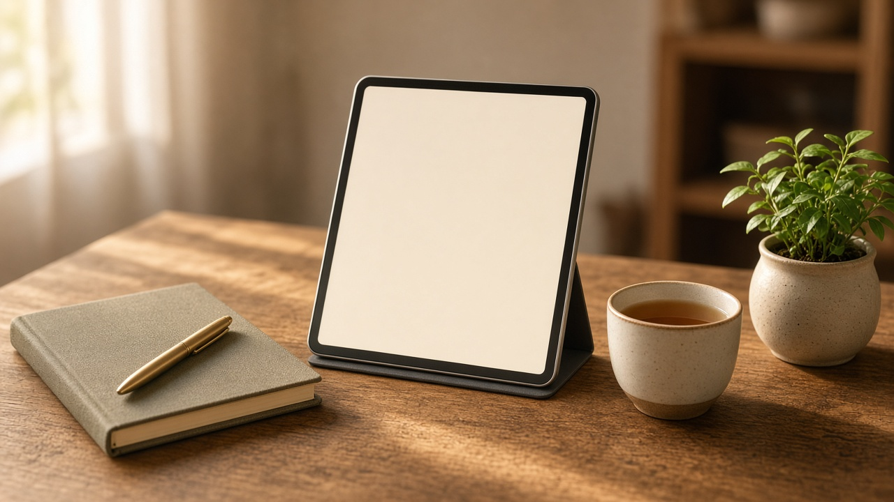
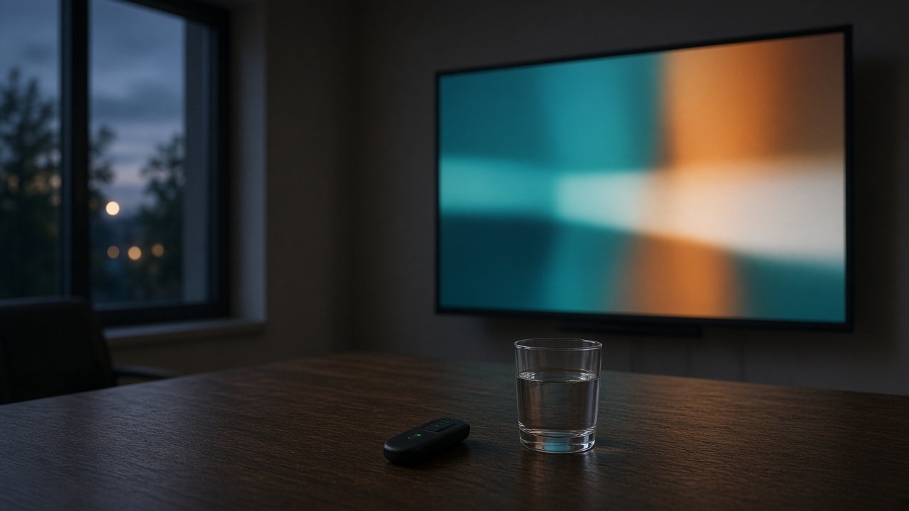

01
English Youtube Tutorial
English
अङ्ग्रेजी
Microsoft Office
माइक्रोसफ्ट अफिसका युट्युब ट्युटोरियल।
Word, Excel, PowerPoint, and Outlook lessons, grouped by the language of the tutorial.

अङ्ग्रेजी

नेपाली

हिन्दी